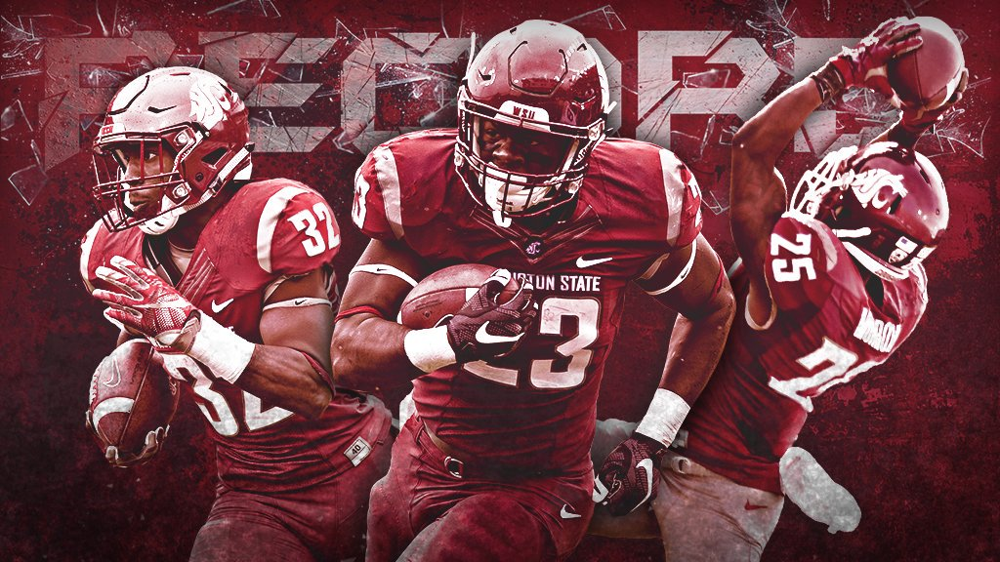
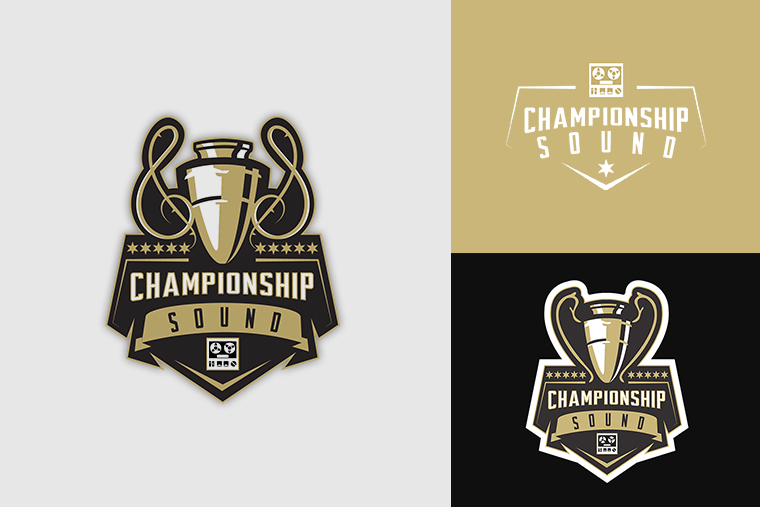
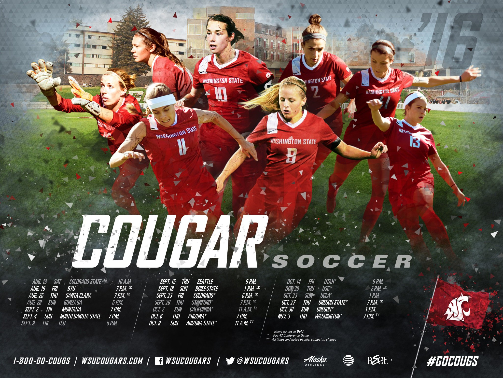
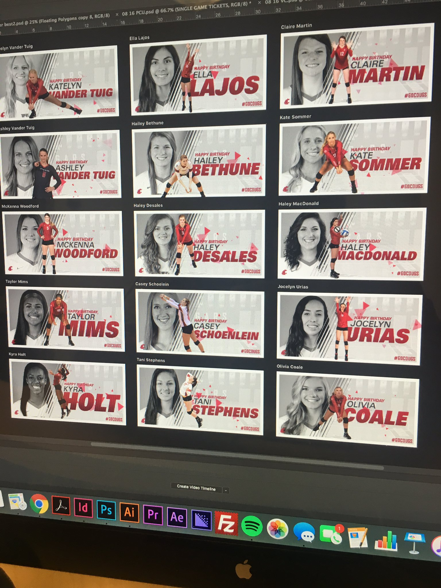

Bio
I grew up enamored with creating things. I've always wanted to be an artist or engineer, and now I'm a designer. So, a solid percentage of my soul is still intact. Sketching Pokemon in my youth transitioned into scribbling friends' names onto trapper keepers during lectures, then into 3D modeling and Photoshop in my young-adulthood.
Now I'm a woman with the Creative Cloud. Which, doesn't exactly make me unique, but provides me with an arsenal of tools to create, collaborate and ideate. Joking aside, I love what I do. I think one of the coolest feelings is being able to do what you love, professionally.

Growing Up in Chicago
I was born and raised as a only child in Chicago, Illinois. To give you an idea, my Mom and I were the only two in my family to graduate from college, so I never really had a passion to be anything like a doctor, lawyer, etc.
I was the only girl who lived on my block, so naturally hanging with the boys became an everyday thing. All of my friends were heavily into sports, and after my Mom got over the fact that I was a "girl," she allowed me to play. I ended up being the first female to play baseball for Jackie Robinson West in Chicago. I went on to play sports throughout my entire life, which is what drives my passion of primarily working in athletics now. An ACL injury in college put a halt to my career and caused me to focus more on my education.

How did you first get interested in design?
Growing up, my Mom had to give me a pen and paper to keep me quiet in church. I still have a lot of those drawings. They're terrible, but then again I was, like, 4-5 years old. From then on, I filled sketch books of drawings up until high school. By Junior year, my art teacher noticed my passion, and began helping me to explore different types of media. I was always a math whiz, so everyone rooted for me to be an engineer, not an artist.
Still undecided, I went to college undeclared, and took classes in engineering, architecture, and life drawing as an elective. I came across a study called "Industrial Design" which basically was a cross between design and engineering. The field seemed lucrative and looked promising, so I finally declared my major. After graduating and working a year in the field, I still wasn't happy. My love of sports still haunted me, and I found myself creating random graphics for athletes and their achievements. After a few months, I began to gain a little traction and get recognition from the professional athletes themselves. At that point, I decided that I wanted to become a sports designer. I quit my job, and haven't looked back since.

Tell me about the work you've done?
I've done work in a variety of fields. I actually started as a videographer shooting music videos for local artists in Chicago. That's initially how I began to build my following. A few of them went on to be big names in the industry today, so I've been able to piggyback a bit off some of their success as well. I think Chance The Rapper being the biggest. After forfeiting my athletic scholarship, I was able to get a job working as the Digital Media Assistant for Illinois Football.
As far as design work, I started as an industrial designer in the point-of-purchase industry. The easiest way to explain is to go to Best Buy and walk around the store. You'll notice that most products have a display that you interact with (pressing buttons, lifting, etc). Those displays are some of the things I had the opportunity to design.
After leaving the industrial design field, I took a job at Washington University Athletics as a Graphic Designer. One year later, I am now at Rutgers.
What have been your biggest struggles of your career?
The biggest struggle for me has definitely been the business side of things. Being a freelancer was a total different ball game for me. Keeping track of jobs, reaching out to prospective clients
What have your experience been as a person of color in the design industry?
It has honestly given me a different perspective on things. I have always been the only female AND person of color in my classroom and office, so I'm now comfortable in any situation. I'm always questioned about how many other blacks I work with or see everyday, but I've grown not to search for those things. However, it always feels great to see another person who looks like you in the field; you can relate to each other.

What are your biggest motivators?
My biggest motivator is seeing how my designs impact others. Creating something that is just bigger than myself and watching the impact is has is so rewarding.
What do you love most about working in design?
Creating in the sports industry does not feel like work to me. I love design. I love sports. I love what I do. I think one of the coolest feelings is being able to do what you love, professionally.
What would you like to see changed about the design field?
I would love to see people's perspective change about design. I want them to understand the value and how it can benefit them, and to realize that everything they touch was designed by someone.

How can design be more accommodating to underrepresented populations of people?
I think you have to expose them to it. I'm big on realizing that design works in every language; it's universal. As designers, we have the ability to communicate in images where words fail to transmit messages.
What advice would you give to folks from similar backgrounds who are in design or hoping to get into it?
Make connections. Push your work out on social media, and get as many eyes on it as you can. Take criticism and learn to grow from it. The word of mouth is very powerful, don't underestimate it.